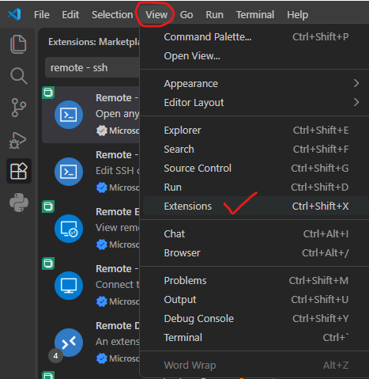
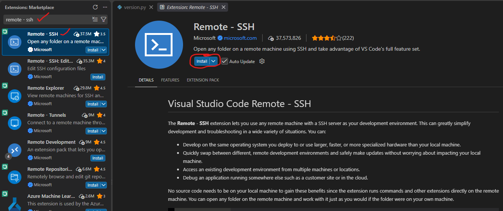
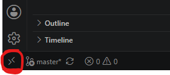
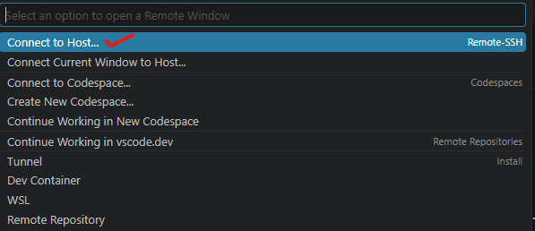
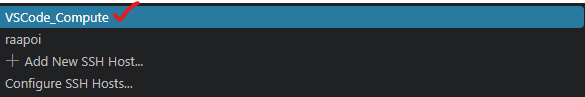
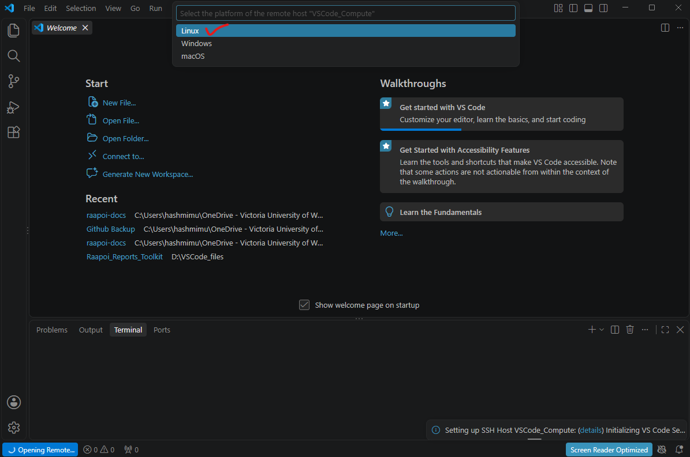
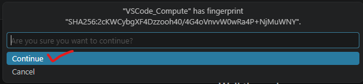
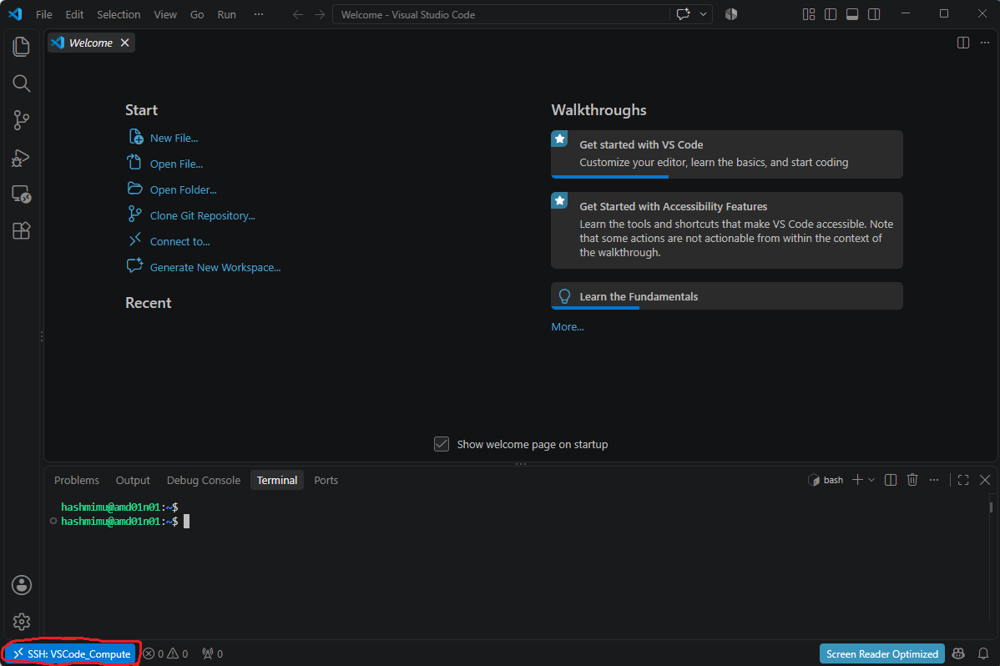

VSCode Usage on Rāpoi¶
Tip
Windows users are recommended to use Windows Terminal (Powershell) in Windows 11 or Git Bash for the following instructions to work.
Running VSCode on the login node is not allowed. It should always be run on a compute node using the instructions below. Before connecting, check whether you really need to use VSCode on Rāpoi or whether it would be better to run it locally on your own machine.
The instructions below should let users run their VSCode session on a compute node.
Step 1. Download and install Microsoft Visual Studio Code from https://code.visualstudio.com/download.
Step 2. Install Remote - SSH extension.
-
Open VSCode, click "View" and then "Extensions" as shown in the image below.

-
Then on the left side in search bar, type "Remote - SSH" and select the first result as shown in image. Then click Install on right side as shown by a red circle on the image.

Step 3. Now you need to create ssh keys on your local machine, (existing ssh keys can also be used - no need to create new ones) and upload them on Rāpoi. The detailed instructions for creating the ssh keys are given below:
- If you are a Windows user, click on start and search for "Terminal" or "PowerShell" and open it. Mac users can open mac terminal.
- Type
cdand press Enter key to go to the user's home directory. My username isaliin the exxample below:
- Then enter into
.sshdirectory by typing
- Now type ssh-keygen and press Enter.
- Follow the prompts on the terminal to generate ssh-key pair. When it asks for the file to save the key, you can give a different name, otherwise you can keep the default one i.e.,
id_ed25519.
C:\Users\ali\.ssh> ssh-keygen
Generating public/private ed25519 key pair.
Enter file in which to save the key (C:\Users\ali/.ssh/id_ed25519):
Enter passphrase (empty for no passphrase):
Enter same passphrase again:
Your identification has been saved in C:\Users\ali/.ssh/id_ed25519
Your public key has been saved in C:\Users\ali/.ssh/id_ed25519.pub
The key fingerprint is:
SHA256:Dc7PcRDKmdKDETrX0+FK7B1IizHxxMP1C2jdOEr3HH8 ali@mypc
-
If you type
ls, you 'll see two files,id_ed25519andid_ed25519.pubin the current directory. We need to upload the public keyid_ed25519.pubto Rāpoi. -
Send the public key to Rāpoi
-
For macOS and Linux users, or Windows users using Git Bash when already inside the
.sshdirectory. ReplaceRAAPOI_USERNAMEwith your actual Rāpoi username: -
For Windows users using Windows Terminal or PowerShell. Replace
RAAPOI_USERNAMEwith your actual Rāpoi username:
-
Step 4. Now its the time to test the new ssh keys. Try logging in as shown below and it should not ask you for your Rāpoi password.
- For macOS and Linux users, or Windows users using Git Bash when already inside the
.sshdirectory. ReplaceRAAPOI_USERNAMEwith your actual Rāpoi username:
- For Windows users using Windows Terminal or PowerShell. Replace
RAAPOI_USERNAMEwith your actual Rāpoi username:
If it logs in successfully, it means that the ssh keys are working correctly.
Step 5. Now you need to update ssh config file on your local machine.
- For macOS and Linux users, or Windows users using Git Bash when already inside the
.sshdirectory. You can use nano as a text editor:
- For Windows users using Windows Terminal or PowerShell when already inside the
.sshdirectory. You can use notepad to edit this file. If it says file does not exist, do you want to create it, select Yes:
- When the config file is open, add the following details to it. Replace
RAAPOI_USERNAMEwith your actual Rāpoi username below. ForIdentityFile, use the full path to the key. I'll write windows path here, Linux and mac users can write their full path (e.g. ~/.ssh/id_rsa). Furthermore, Ifamd01n01is not available, you can use any other node as well likeamd01n02.
Host VSCode_Compute
User RAAPOI_USERNAME
HostName amd01n01
ProxyJump raapoi_login
Host raapoi_login
HostName raapoi.vuw.ac.nz
User RAAPOI_USERNAME
Host *
ForwardAgent yes
ForwardX11 yes
ForwardX11Trusted yes
IdentityFile C:\Users\ali\.ssh\id_ed25519 # Add your own private key path here
AddKeysToAgent yes
StrictHostKeyChecking no
UserKnownHostsFile /dev/null
Save this file and close it.
Step 6. On your local machine, open a terminal window (Windows Terminal, Windows Powershell, GitBash, etc.) and login to Rāpoi as below:
Once logged in, allocate resources for the VSCode session using the same terminal. You 'll see the USERNAME@raapoi-login changing to USERNAME@amd01n01.
RAAPOI_USERNAME@raapoi-login:~$ srun -t0-05:00:00 -wamd01n01 --cpus-per-task=2 --mem=4G --pty bash
srun: job 3435343 queued and waiting for resources
srun: job 3435343 has been allocated resources
RAAPOI_USERNAME@amd01n01:~$
Step 7. Connect VSCode session.
-
Now is the time to connect VSCode to the interactive session we just got on Rāpoi. Follow the instructions below:
- Open VSCode window, and click on the bottom left corner that says
Open a Remote Window.

- Then choose
Connect to Host.

- Then select
VSCode_Computeas a host.

- For the first time, it will ask you for the OS of the host. Select
Linux.

- Then it will ask you to verify the fingerprint of the host (amd01n01). Click Continue.

- Once a connection is established, your VSCode session should be running on a compute node now. You can see the red circle in the picture below:

- Open VSCode window, and click on the bottom left corner that says
Step 8. To close VSCode session.
Go to File > Close Remote Connection. DO NOT simply close the VSCode window as it leaves VSCode processes behind.
Tip
To speed up VSCode, there are steps mentioned in the official VSCode docs. Below is just a part of it:
Once connected, update VSCode's /nfs/home/$USER/.vscode-server/data/Machine/settings.json, and add the following lines to it:
Tip
The instructions above assume that the node amd01n01 is up and has sufficient resources available. There may be times when this is not the case and you need to adapt these steps to access cpus on a different node. As a workaround you'll need to modify steps 5 and 6 to point towards a different node.